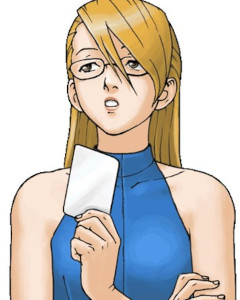
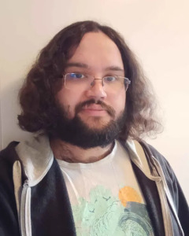

Tekijät
Virva Kaarne "Vinski"
(They/them)
Ohjaus, käsikirjoitus, musiikin johto, nettisivut
Heipä hei! Tässä Virva eli Vinski, Vastalauseen ohjaaja-käsikirjoittaja sekä musiikkivastaava. Päähommiini kuuluu johtaa treenejä, laatia kohtauksiin ohjaussuunnitelmat yhdessä apuohjaajan kanssa ja pitää huolta, että koko tiimin saatavilla on aina ajantasainen käsikirjoitus - jottei kenellekään tule treenilauantaina ikävää yllätystä, että kohtauksen 16 dialogi onkin vanhentunut ja uusi versio kirjoitettiin samana aamuna. Vastuullani on myös musiikin sovittaminen ja harjoituttaminen. Kaiken kaikkiaan työni on olla projektin yleishösääjä ja taiteellisen toteutuksen lankojen käsissäpitelijä yhteistyössä muun tiimin kanssa. Ai niin, ja koodasin nämä nettisivut.
Olen pyörinyt parin aiemmankin faniproggiksen taustatyöläisenä: Valitut lapset - Digimon-näytelmässä olin lavaninjana ja Undertale-musikaalissa bäkkäritiimissä avustajana. Muutoin teatteri- ja musiikkijuureni juontavat oopperakuorohommiin ja opiskelijaproduktioissa myös solistirooleihin. Typecastini tuntuu olevan ilkikuriset juonittelijat... Musiikkipedagogin paperit löytyvät taskusta, ja niiden voimin olenkin tehnyt laulunopetusta ja jonkin verran kuoronjohtoakin.
Ace Attorneyn löysin aikoinaan Lacryn Let's playn kautta, ja sen jälkeen sarja onkin ollut katkeamatta hyperfokukseni. Tärkeimmät alta pois: Farewell, My Turnabout on paras keissi, Wrightworth paras shippi ja Adrian Andrews paras sivuhahmo.
Olen Helsingissä syntynyt ja sinne paluumuuttanut Turun kasvatti. Syntymävuoteni on 1993 ja olen joissain asioissa stereotyyppisin mahdollinen ysärimilleniaali: pidän avokadosta ja puhun yhtenään Muumi-sitaatein. Olen hiljattain saanut dekkarikärpäsen pureman: vähän aikaa tuli luettua uudestaan Agatha Christien mestariteos Eikä yksikään pelastunut ja nyt on kesken toinen Christie, Teetä kolmelle.
Camilo "Cami" Garcia Yläsaari
Apuohjaaja
Hei! Mä olen Camilo Garcia Yläsaari (Cami lyhyesti) ja oon Vastalause-musikaalin apuohjaaja ja tuotantotiimin jäsen. Oon 27-vuotias vammaisavustaja ja nörtti Espoosta.
Oon pienestä pitäen rakastanut teatteria ja esiintymistä. Oon tehnyt YouTubeen lyhytelokuvia kavereitten kanssa ja esiintynyt Undertale-fanimusikaalissa. Vastalause on kuitenkin ensimmäinen kerta kun työskentelen aktiivisesti tuotannon ja ohjauksen puolella ja hyvin innoissani sitä.
Vapaa-aikana katson leffoja ja sarjoja, pelaan pelejä (Ace Attorney on ollut pitkäaikainen suosikki), laulan Unreality-kuorossa ja soitan kitaraa. Tämä proggis on siis loistava sekoitus mun mielenkiinnon kohteita. En malta odottaa että päästään näyttämään tämä teille kaikille!